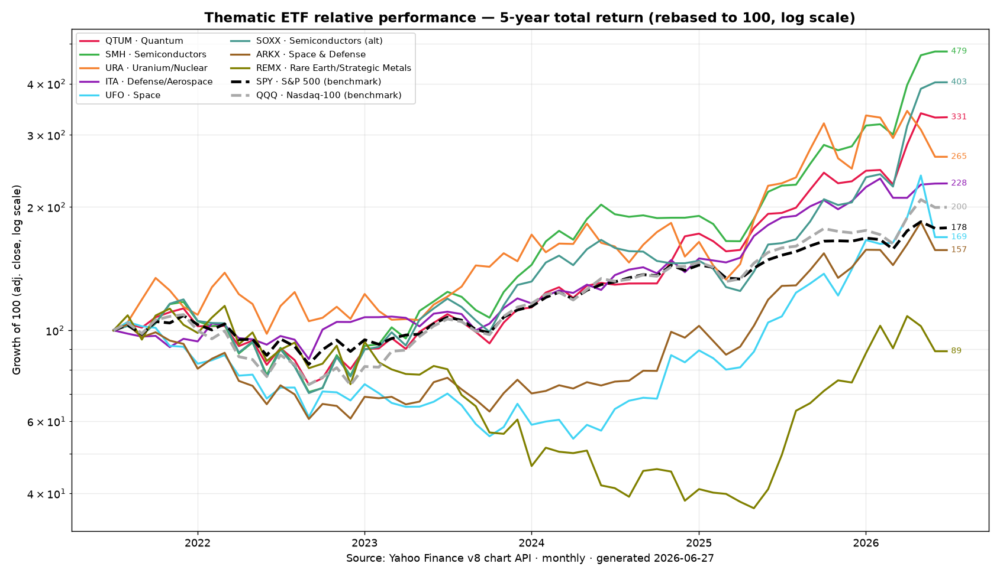
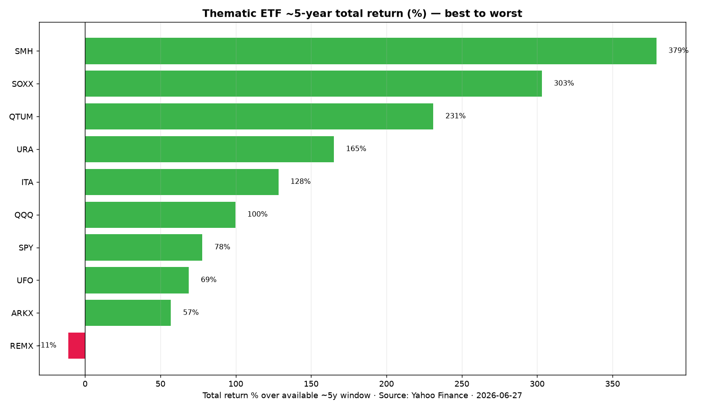

A timeline of news and government contracts correlated to relative gains across the market's hottest subsectors — semis, memory, photonics, drones, space, quantum, nuclear, defense, rare earths & more. Coverage 2024 → June 2026.
🖱️ Open the interactive ETF chart →Adjustable start-date slider (1M/3M/6M/1Y/2Y/3Y/YTD/Max) rebases every line to 100 to isolate short-term relative trends · clickable ◆ diamond nodes surface key catalysts · 87 ETFs + SPY benchmark grouped by subsector · legend shows ticker · subsector.


Master cross-sector catalyst timeline + 9 subsector deep-dives (narrative, key-ticker performance, dated event timelines, sources).
Per-ETF watchlists with EPS growth, P/E, forward P/E, margins, and backlog for ~75 companies, plus the 5y ETF return table.
Data: Yahoo Finance (prices, adj-close) and stockanalysis.com / company IR & SEC filings (fundamentals), as of June 2026. Figures are approximate — verify before use. Not investment advice.